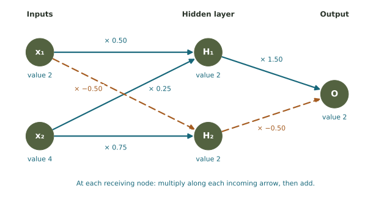

Follow the signal. Account for every weight.
Start with two sensor scores. Multiply along arrows, add at the receiving nodes, and see why a connected input can still have no net effect.
A tiny network that combines two sensor readings
Imagine a small program receiving two simplified indoor sensor scores. Let \(x_1\) be a heat score and \(x_2\) a motion score, each rescaled to numbers from 0 to 6. In our starting example, \(x_1=2\) and \(x_2=4\). The subscripts 1 and 2 are labels identifying the two inputs; they are not exponents.
The program passes these numbers along arrows, multiplies them by weights, and adds the incoming contributions at each receiving node. Its final value, \(O\), is a toy output score. It is not a probability, a temperature, or a real instruction to a building system.
All weights here are invented so the arithmetic stays visible. The network has not been trained on sensor data. It illustrates a calculation used inside neural networks; it does not reproduce a modern AI model.
Node
Holds an input or a calculated number.
Arrow
Shows which receiving node uses the signal.
Weight
Multiplies a signal before it contributes to a sum.

Read one receiving node at a time
The intermediate nodes \(H_1\) and \(H_2\) form a hidden layer. “Hidden” means between the inputs and output, not secret or mysterious. In this model each one adds its incoming weighted signals. There are two computational stages: calculate the hidden nodes, then the output.
Example · Calculate H₁ with x₁ = 2 and x₂ = 4
The arrow from \(x_1\) contributes \(0.50(2)=1\). The arrow from \(x_2\) contributes \(0.25(4)=1\). Add the contributions:
\[H_1=0.50x_1+0.25x_2=1+1=2.\]
Parentheses indicate multiplication: \(0.50(2)\) means one-half times 2. The result 2 becomes an input to the next stage.
| Receiving node | First contribution | Second contribution | Sum |
|---|---|---|---|
| H₁ | 0.50 × 2 = 1 | 0.25 × 4 = 1 | 2 |
| H₂ | −0.50 × 2 = −1 | 0.75 × 4 = 3 | 2 |
| O | 1.50 × H₁ = 3 | −0.50 × H₂ = −1 | 2 |
For \(H_2\), the negative weight contributes −1, so the total is \(-1+3=2\). For the output, \(O=1.50H_1-0.50H_2=3-1=2\). A negative multiplier reverses a signal’s contribution to the sum. It does not mean an arrow points backward.
Does every input change the output?
Move one slider at a time. First leave both experiment boxes unchecked to use the original rule. Watch the two hidden values and the final score. The table shows every multiplication and addition.
The original network has a cancellation
Hold \(x_1=2\) and move \(x_2\) from 4 to 6 with both boxes unchecked. \(H_1\) rises from 2 to 2.5, while \(H_2\) rises from 2 to 3.5. The output contributions become \(1.50(2.5)=3.75\) and \(-0.50(3.5)=-1.75\). Their sum is still \(3.75-1.75=2\).
A clearer way to compare the change is to add 1 to \(x_2\). One path increases the output by \(0.25(1.50)=0.375\); the other decreases it by \(0.75(0.50)=0.375\). They cancel exactly. In this original linear model, changing \(x_2\) changes the hidden values but leaves the output unchanged.
Removing a weighted edge can change the answer
Return to the original inputs \(x_1=2\), \(x_2=4\), with no negative-sum replacement. Remove the arrow \(x_2\to H_1\). Now its contribution is absent:
The output rule stays \(O=1.50H_1-0.50H_2\). Use the changed hidden values. The removal also breaks the cancellation between the two motion-score paths.
An extra rule can change the kind of relationship
Our original model only multiplies by constants and adds. Combining such linear calculations still gives a linear relationship; in fact, its entire output simplifies to \(O=x_1\). More hidden nodes alone do not make a model’s behavior more flexible.
A real neural network commonly applies an activation function after a weighted sum. That is another rule for transforming the number. One simple example is ReLU: keep a nonnegative sum, but replace a negative sum by zero. In symbols, \(\max(0,s)\) means “choose the larger of 0 and the sum \(s\).”
Try a case where the extra rule matters
Set \(x_1=4\), \(x_2=0\), with all arrows present. The hidden sums are \(H_1=2\) and \(H_2=-2\). Without the extra rule, the output is \(1.50(2)-0.50(-2)=4\). If the hidden nodes replace negative sums by zero, their sent values are 2 and 0, and the output becomes 3.
The receiving node no longer always passes along its raw sum. This creates a nonlinear relationship. The extension box applies this rule only at the hidden nodes; the output still just adds its weighted inputs.
Real models also commonly include biases, extra adjustable constants added to a node’s sum. We set all biases to zero here. You do not need activation functions, bias formulas, or calculus for the required checks.
Calculating a prediction and training a model are different steps
A forward pass calculates an output using the current inputs and weights. Moving a slider performs another forward pass. It does not train the network, because the weights stay fixed.
Training uses examples with targets. A target is the output the model is asked to match for that example. The system compares prediction with target, calculates an error or loss, and adjusts weights in response. This is a feedback process, connecting to Week 5.
Example · One simple correction
Use the original inputs, arrows, and sum-only rules. The prediction is 2. Suppose the training target for this invented example is 3. With the convention “signed error = target − prediction,” the error is \(3-2=1\).
Keep both hidden values at 2. Change the weight from \(H_1\) to O from 1.50 to 2.00. The new output is \(2.00(2)-0.50(2)=3\). This hand-chosen change matches this one target. It does not establish that the model will make good predictions on other examples.
In larger networks, backpropagation calculates how the loss changes with each parameter; an optimization method uses that information to update parameters. Our one-weight example illustrates the feedback idea without that machinery.
What the network picture explains—and what it leaves out
The arrows show where a signal can travel. The weights and node rules determine the calculation. Training describes how those weights may change over many examples. These are three different levels of description.
Optional background: Google’s nodes and hidden layers and activation functions. The scores, weights, and targets in this exercise are invented.